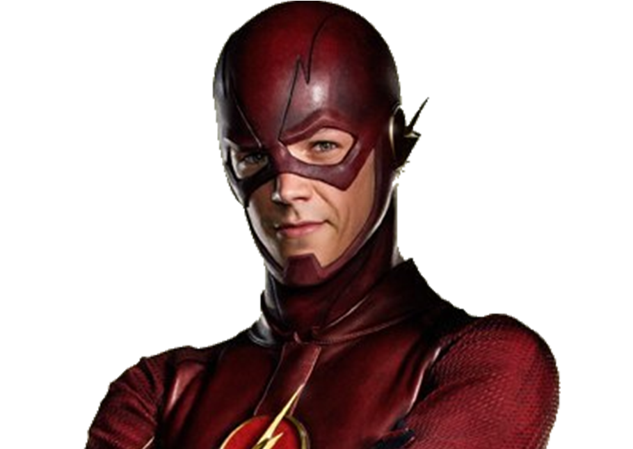

"Its not being a hero. Its just doing the right thing."
Indy cars, bullet trains, supersonic aircraft… The Flash leaves them all in the dust.
Young Barry Allen’s life stopped the minute his mother was murdered. The true killer never found, its mystery obsessed Barry, driving him to become a forensic scientist. Consumed by his work, he spent his life chained to his desk, solving every case that flew across it. But when a freak lightning bolt hits a nearby shelf in his lab, Barry receives super-speed, becoming the Flash. Now, he’ll race up buildings, across oceans, and around the world to get his man—while getting introduced to a world so much bigger than his old life of microscopes and cold cases.
Charcter Facts
| Power: | Super speed, intangibility, superhuman agility |
| Occupation: | Forensic scientist |
| Alias/Aka: | Scarlet Speedster, The Fastest Man Alive |
| First Appearance: | FLASH COMICS #1 (1940) |
| Real Name | Barry Allen |